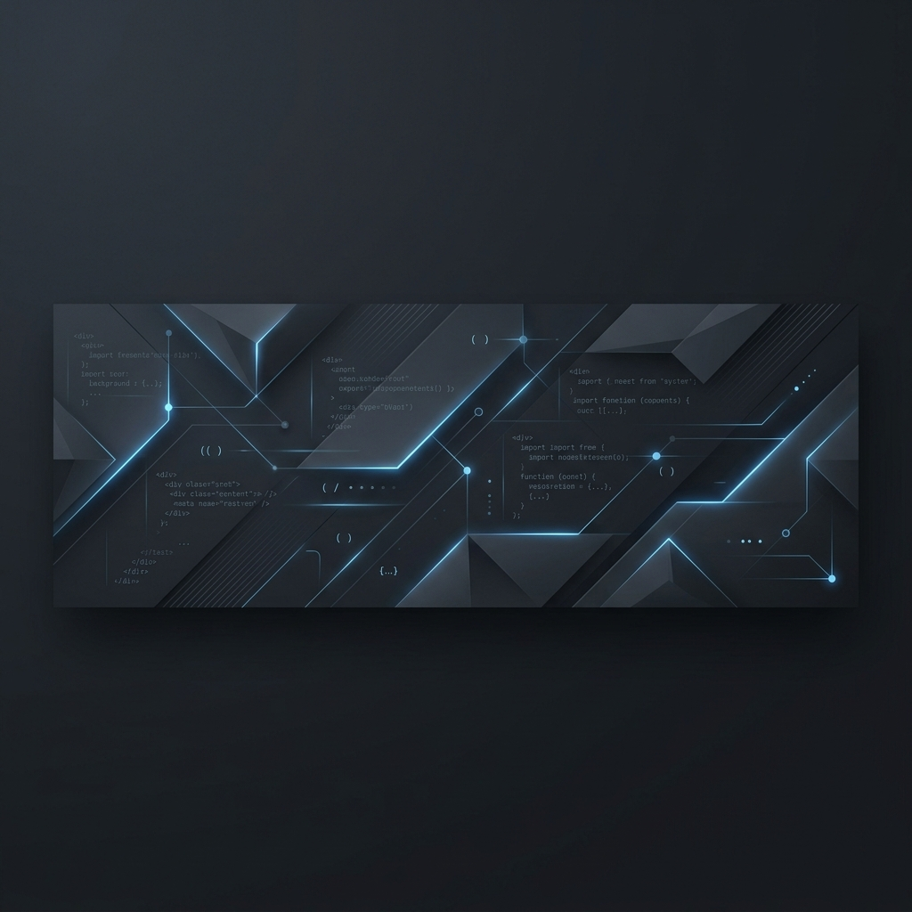

Olá, eu sou o Guilherme Felix
Desenvolvedor Backend com foco em criar APIs eficientes, estruturadas e fáceis de manter usando Python e SQL.
Ver ProjetosSobre Mim

Desenvolvendo soluções simples para problemas complexos.
Atuo no desenvolvimento backend com foco em construir lógicas sólidas e APIs que resolvam problemas de forma direta, sem complicar o código.
Minha stack principal envolve o uso de Python para automações e desenvolvimento de serviços, integração com bancos de dados relacionais utilizando SQL e controle de versão eficiente com Git.
Busco sempre escrever um código limpo, organizado e sustentável, facilitando a manutenção e a evolução contínua das aplicações.
Tecnologias
Python
Linguagem principal usada na construção de scripts, automações e lógica backend robusta.
APIs
Arquitetura, design e integração de rotas e serviços backend bem estruturados.
SQL
Modelagem relacional de dados, estruturação e otimização de consultas e queries.
Git
Controle de versão de código e boas práticas de organização de repositórios.
Projetos
Gerenciamento de Tarefas (API)
Uma API desenvolvida para controle de finanças pessoais e gerenciamento de tarefas, com foco em rotas organizadas, tratamento de erros e integração com banco de dados.
Contato
Estou sempre interessado em ouvir sobre novos projetos e oportunidades. Entre em contato comigo por meio de qualquer um dos canais abaixo.